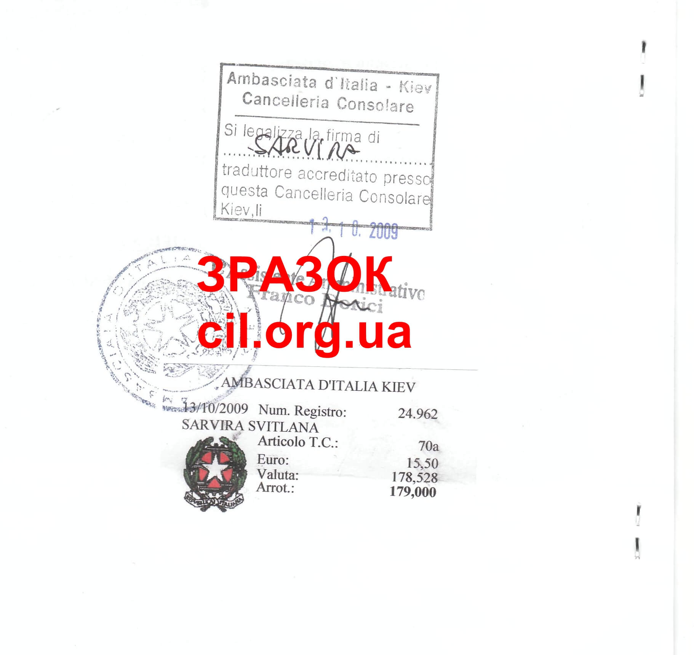

Консульська легалізація документів
Слово легалізація люди розуміють по різному, одні вважають: що нотаріальне посвідчення це і є легалізація, другі - що це проставлення печатки головного відділу юстицій області, треті - консульська легалізація перекладу при посольстві. Ось це
і є легалізація яку потрібно розуміти та робити для країн які не входять до угоди Гаазької конвенції і потребують окремий переклад при консульстві та засвідчення цього перекладу підписами перекладачів та наклеювання марочки з консульським збором.
Легалізація може тривати значно довше ніж апостиль від 5 робочих днів до місяця часу, залежно знову ж таки від напливу, типу документу та кількості перекладачів при консульстві.
Список країн що не входять до Гаазької конвенції : Італія, ….
Що потрібно мати для подання документу на легалізацію?
1 обов'язково оригінал документу
2 обовязково печатка головного управління юстицій (на свідоцтвах про народження, одруження, розірвання шлюбу, смерті)
3 копія закордонного
паспорта (для правильностиі написання прізвищ та імен)
Яка процедура легалізації ?
1 Належним чином оформлені та скомплектовані документи відсилаються в Київ (1 день)
2 Проставляється апостиль (в середньому орієнтовно 4 робочих дні)
3 Після проставлення апостилю документи передаються в консульство для проставлення легалізації (від 5 роб. днів до місяця часу)
4 Документи пересилаються до Цілі і передаються клієнту-замовнику (1 день)
Приблизна схема легалізації документів

Зразок легалізації документа в Китайському консульстві
Зразок легалізації документа в Італійському посольстві
